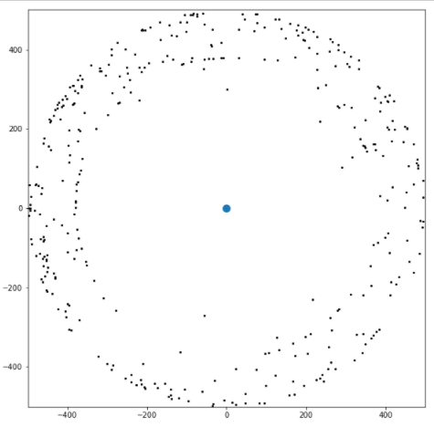
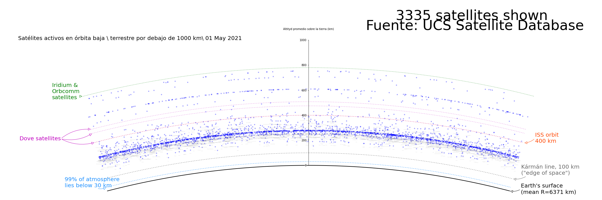

Explorando el espacio a través de la pantalla: Ciencia de datos como apoyo al diseño de misiones espaciales
Club18: 13,800 millones de años de viaje, la historia del Universo
Proyecto final de Clubes de Ciencia 2021
La exploración espacial ha jugado un papel importante en la historia de la humanidad. Gracias a ellos cada uno de nosotros tiene al alcance de sus manos imágenes de objetos que se localizan a cientos o miles de kilómetros de distancia de nosotros y no solo eso, también nos ha llevado a pensar en viajar a otros planetas o inclusive a otras galaxias. Pero dinos ¿realmente conoces que implica un viaje espacial o que ciencias están de tras de la uno? Siempre es importante conocer los fundamentos y un poco de historia, por eso en el Club 18: 13,800 millones de años de viaje, la historia del Universo, nos platicaron acerca de cuáles son los componentes principales del cosmos y cómo tenemos evidencia de ellos gracias a misiones espaciales como el telescopio Hubble o el satélite Planck. También vimos el papel de las futuras misiones como LISA y la detección de ondas gravitacionales.
Description
Solving the problem
Challenges
Methodology
Next steps
- Fase de crucero interior 1: Colocar la nave al rededor Sol.
- Fase de crucero interior 2: Sobrevuelo alrededor de la Tierra. Se realiza la asistencia por gravedad.
- Fase de crucero interior 3: Maniobra de inserción en la órbita Júpiter.
Visualualizando la UCS Satellite Database


Con la información contenida en el dataset de la USC podemos construir una representación de la localización de los sat1elites según la altura a la cual se encuentran de la Tierra. Y como se observa en la imagen se arriba la mayoría se encuentra. Como se observa en la figura de “Satélites activos en órbita baja \ terrestre por debajo de 1000 km\ 01 May 2021”, la mayor concentración de satélites radica entre los 100 y 400 km por encima de la Tierra, siendo evidente que debajo de la linea de Karman que límite entre atmósfera y espacio exterior, no hay satelites.
Analizando la UCS Satellite Database. ¿Qué información podemos obetner?
Los 4084 satelites que la base de datos del USC nos proporciona presentan ya sea orbita de clase LEO, GEO, Eliptica o MEO.Si se realiza un histograma de frecuencias considerando el tipo de orbita, podemos observar que los satelites con orbitas tipo LEO son los más comunes con más de 3000 ejemplares. Las orbitas LEO o Low Earth Orbit se encuentran relativamente cerca de la superficie de la Tierra, a una altitud de menos de 1000 km, pero podría estar tan bajo como 160 km sobre la Tierra. Seguido tenemos a los tipo GEO y por último a los tipo LEO
Los satélites con orbitas GEO u orbitas geoestacionarias son aquellos que necesitan permanecer constantemente sobre un lugar particular de la Tierra, como los satélites de telecomunicaciones y monitoreo del clima. De esta forma, se puede fijar una antena en la Tierra para que permanezca siempre apuntando hacia ese satélite sin moverse. Como se ve en el histograma de longitudes estos se encuentran ampliamente repartidos por los dos hemisferios el planeta, siendo a los -100 grados, la coordenada con mayor número de satélites a esa altura.
Viajando a Jupiter desde la Tierra en el 2026
La misión espacial propuesta por nuestro equipo consiste en lanzar un repetidor interestelar desde la Tierra a Júpiter, con el fin de aumentar el rango de detección de las señales de las sondas espaciales que se encuentran a grandes distancias como son Vayaer 1, Voyager 2 y Pioner 11. Para realizar esta labor se requiere un receptor que tenga una antena receptora que sirva para captar la señal de las sondas interestelares, un circuito repetidor que amplifique la señal hacia la Tierra y paneles solares que mantengan funcionando el repetidor durante al menos 25 años. La ventana de lanzamiento se programó con ayuda del Trajectory Browser de la Nasa ,el cual se utilizó para obtener las fechas de lanzamiento y de asistencia gravitacional que la misión requiere para llegar a su destino. Adicionalmente se hizo uso de la paquetería de Poliastro para diseñar la trayectoria del viaje espacial.
La misión consistirá en un viaje de ida sin retorno. Los cálculos del diseño de la trayectoria se realizaron considerando un vehículo de lanzamiento Atlas V-551. El recorrido de la nave desde la Tierra hasta Jupiter tendrá 3 maniobras, mismas que realizó la misión espacial Junoen 2011:
Resources
The team
Alejandro Ruiz Diego
Estudiante
Abigail Flores Villeda
Estudiante
Eduardo Cen Chan
Estudiante